HELLO KOTLIN
Kotlinを
書き始める
JavaとSwiftで書けることは、Kotlinでも書けます。
この単元では、知っている処理を「Kotlinならどう書くか」に置き換えます。
この単元のゴール
この授業は Kotlin演習 です。1コマ90分、全15コマで進みます。そのうち単元 K01HelloKotlin は全6コマです。
この教科書は、その6コマぶんを1冊に順に積み上げていきます。いま入っているのは1コマ目（STEP 00〜06）と2コマ目（STEP 07〜12）と3コマ目（STEP 13〜18）で、回を重ねるごとに、うしろへSTEPが増えていきます。今日どこをやるかは、授業のはじめに先生が指定します。指定されたSTEPから、前から順に読み進めてください。
6コマのあいだ、プロジェクトは K01HelloKotlin の1つだけを使います。回を重ねるごとに、その中へ ex01、ex02 …とパッケージを足していきます。この教科書も1冊のままで、回ごとにSTEPが増えていきます。
みなさんはすでにJavaとSwiftを書けます。ですからこの教科書は、変数とは何か、型とは何か、という話はしません。扱うのは次の2つだけです。
- Kotlinではどう書くのか。
- JavaやSwiftと何が違い、なぜ違うのか。
Kotlinはどこで動く言語か
Kotlinで書いたコードは、JVM（Java Virtual Machine）で動くJavaバイトコード（class ファイル）にコンパイルされます。つまり、Javaが動く環境ならKotlinも動きます。このような言語を JVM言語 と呼びます。
| Kotlinの特徴 | 中身 | すでに知っていることとの関係 |
|---|---|---|
| 記述量が少ない | 同じ処理でも、Javaより短く書ける。 | 省けた部分はコンパイラが補っています。何が省かれたのかを、この単元で1つずつ確かめます。 |
| Javaとの相互運用 | JavaのコードからKotlinを、KotlinのコードからJavaを呼べる。 | 全部をKotlinに書き換えなくても混在させられます。古いAndroidアプリにJavaが残っているのはこのためです。 |
| Null安全 | nullを入れられる型と、入れられない型を、言語が区別する。 | Swiftのオプショナルと同じ発想です。 |
| Javaの資産が使える | Java用のライブラリやフレームワークをそのまま使える。 | JVM言語だからです。Kotlin用に作り直されるのを待つ必要はありません。 |
同じ処理を3つの言語で並べる
名前を変数に入れて出力するだけのプログラムです。まず全体の差を見ます。細かいところは STEP 03 以降で1つずつ扱います。
Kotlin
fun main() {
val name = "Kotlin"
println(name)
}Java
public class Main {
public static void main(String[] args) {
final String name = "Java";
System.out.println(name);
}
}Swift
let name = "Swift"
print(name)POINT
- Kotlinの入口は
fun main()です。Javaのように、入口をクラスで包む必要がありません。String[] argsにあたる引数も省けます。 - Kotlinの
valは、Javaのfinal、Swiftのletにあたります。 - 型注釈はSwiftと同じく省けます。右辺から型が決まります。
- 文末のセミコロンはSwiftと同じく要りません。Javaとはここが違います。
- 出力はKotlinが
println、JavaがSystem.out.println、Swiftがprintです。
JavaとSwiftを知っていれば、Kotlinは「差分」で覚えられます。この教科書は、その差分だけを並べていきます。
この単元で出てくるKotlinの言葉
| Kotlinの言葉 | Javaでの対応 | Swiftでの対応 |
|---|---|---|
val | final を付けた変数 | let |
var | final を付けない変数 | var |
| トップレベル関数 | クラスの static メソッド | グローバル関数 |
println | System.out.println | print |
Int / Double / Float | int / double / float とそのラッパークラス | Int / Double / Float |
1コマ目のゴール（コンソールに出る4行）
1
2.0
3.0
Tanakaこの4行を出すまでを、STEP 00 から STEP 06 までの7つのステップに分けて進みます。
1コマ目（90分）の進み方
| 時間 | 進めるステップ | やること |
|---|---|---|
| 前半（約35分） | STEP 00〜02 | Playgroundで1行動かし、IntelliJ IDEA に K01HelloKotlin プロジェクトを作る。 |
| 後半（約55分） | STEP 03〜06 | val と var、数の型を書き、4行の出力を完成させる。 |
プロジェクトは 自分で新規作成します。1コマ目の STEP 02 で K01HelloKotlin を作ります。2コマ目からは、このプロジェクトを開き直して続きを書くので、作り直しません。
完成プロジェクトは、最初の授業からいつでも見られる参考資料です。自分で書いたコードと比べるときに使います。
この教科書の進め方
書き方を読む → 入力する → Runで動かす → Java・Swiftとの差を確かめる。この順で進めます。家で予習していなくても始められます。
分からないところには、ステップ番号で印を付けましょう。「STEP 03の、val と Javaの var の関係が分かりません」のように質問できます。
ここで止まって確認
できたらチェックします。できないときは、この画面を先生に見せましょう。
Kotlin Playgroundで動かす
このステップのゴール
開発環境を用意する前に、ブラウザだけでKotlinの fun main() を実行します。
統合開発環境の準備は一手間かかります。最初の1行を動かすだけなら、ブラウザで動く Kotlin Playground で十分です。
① Playgroundを開く
- ブラウザで https://play.kotlinlang.org/ を開きます。
- エディタと、その下に実行結果のウィンドウがある画面が出ます。
| 画面の場所 | 役割 |
|---|---|
| 上の言語バージョンのメニュー | Kotlinのバージョンを切り替えます。既定で最新版です。授業では変更しません。 |
| 共有のボタン | いま書いているコードのURLを作ります。人に見せるときに使います。 |
| Run ボタン | プログラムを実行します。 |
| ショートカットのボタン | キーボードショートカットの一覧を出します。 |
| 下の実行結果のウィンドウ | 出力が出る場所です。Runすると自動で開きます。 |
② エディタの中身を置き換えて実行する
エディタの中をクリックし、⌘ A で全部選んでから、次のコードを貼り付けます。
fun main() {
println("Hello, Kotlin!")
}- Run をクリックします。
- 下のウィンドウに
Hello, Kotlin!が出れば成功です。
③ 同じことを、JavaとSwiftではどこで試すか
Kotlin
fun main() {
println("Hello, Kotlin!")
}Java
System.out.println("Hello, Java!")Swift
print("Hello, Swift!")POINT
- JavaのJShellやSwiftのREPLは、式を1つずつ打って結果を見る場所です。だから
System.out.println(…)やprint(…)の1行だけで動きます。 - Kotlin Playgroundは、ファイル1つ分をまるごと実行する場所です。だから入口の
fun main()が要ります。println("Hello, Kotlin!")だけを貼っても実行されません。 - Swiftのように「トップレベルに書いた文がそのまま上から実行される」わけでもありません。Kotlinの入口は、常に
fun main()です。
Playgroundの短所
実行結果が出るまでに時間がかかります。サーバー側でコンパイルして実行しているためです。
コード補完がほとんど効きません。型を確かめたり、候補から選んだりする書き方ができません。
この2つがあるので、この先は統合開発環境を使います。Playgroundは、短いコードを人に見せるときや、あとで文法を思い出したいときに使ってください。
ここで止まって確認
できたらチェックします。できないときは、この画面を先生に見せましょう。
IntelliJ IDEAでプロジェクトを作る
このステップのゴール
IntelliJ IDEA で K01HelloKotlin プロジェクトを作り、ウィザードが用意したコードをそのまま実行します。動くことを確かめてから、src/ex01/main.kt を自分で作ります。
授業ではMacと IntelliJ IDEA 2026.3 EAP を使います。IntelliJ IDEA は、学校から借りているMacにインストール済みです。Launchpadで探すか、Spotlight（⌘ Space）に IntelliJ と打って開きます。
① 新規プロジェクト… を選ぶ
- IntelliJ IDEA を開きます。最初に出るのがホーム画面です。
- 左上の IntelliJ IDEA Home をクリックして、メニューを開きます。
- 出てきた一覧から 新規プロジェクト… を選びます。新規… ではありません。
- すでに別のプロジェクトが開いているときは、いちばん上のメニューバーから ファイル → 新規 → プロジェクト… を選びます。
{kind=link}
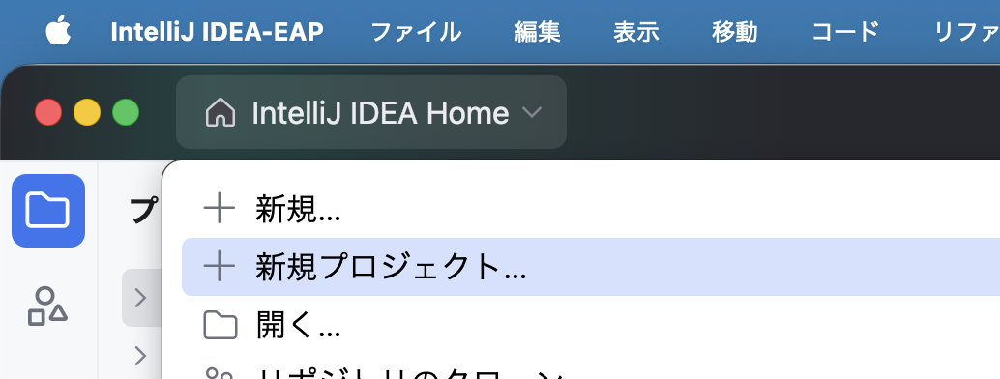
② ダイアログに、表のとおり入力する
新規プロジェクト のダイアログが開きます。次の7か所を、表のとおりに入力・選択します。
| 項目 | 入力・選択する内容 |
|---|---|
| 左の一覧 | Kotlin。見出し 新規プロジェクト の下に並ぶ4つのうちの2番目です。下の ジェネレーター の中からは選びません。 |
| 名前 | K01HelloKotlin |
| 場所 | ~/Documents/Kotlin（書類 の中の Kotlin フォルダ。無ければ 書類 の中に作ります）。プロジェクト名は入れません。 |
| ビルドシステム | IntelliJ。Kotlin・Maven・Gradle は選びません。 |
| JDK | 一覧に出ているものを、そのまま使います。 |
| サンプルコードの追加 | チェックを入れたままにします。 |
| コンパクトなプロジェクト構造を使用する | チェックを入れたままにします。 |
{kind=link}
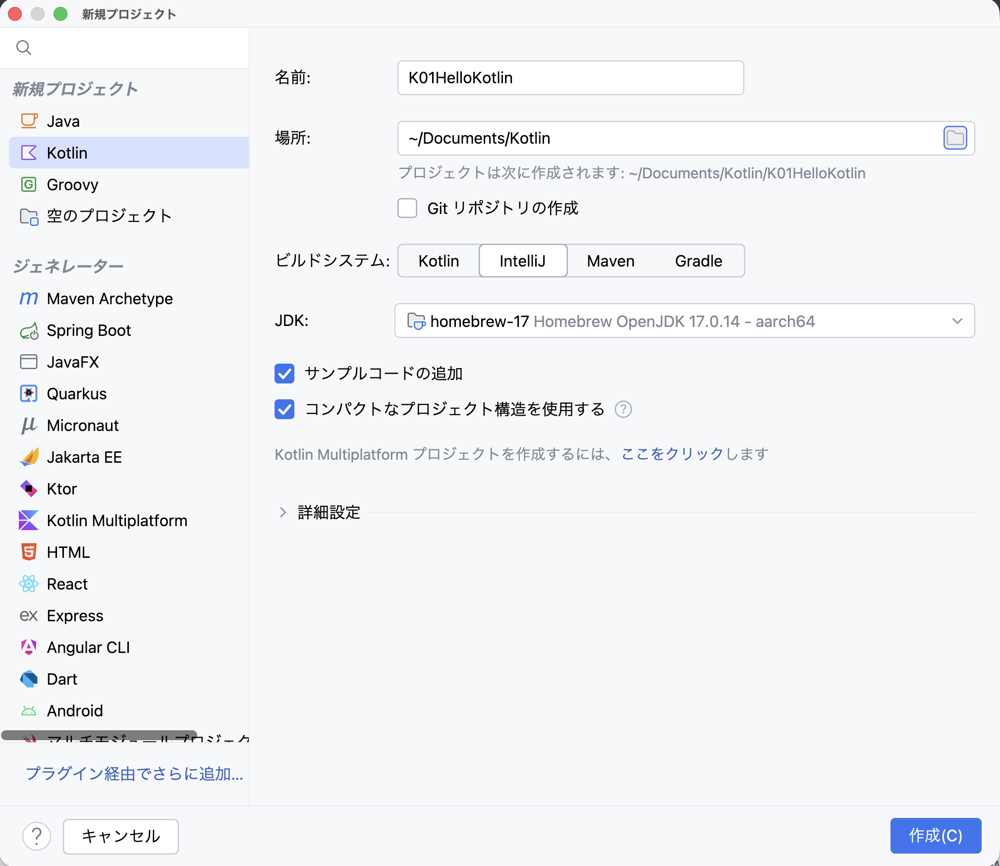
ビルドシステムに IntelliJ を選ぶ理由
Gradleを使わないので、ビルドの設定ファイルが増えず、自分が書いたKotlinのファイルだけを見ればよくなるからです。
入力できたら、場所 の欄のすぐ下に出ている プロジェクトは次に作成されます: ~/Documents/Kotlin/K01HelloKotlin の行を読みます。この場所になっていることを確かめてから、右下の 作成(C) を押します。
③ できあがった形を確かめる
左の プロジェクト ツールウィンドウに、次の形ができます。
K01HelloKotlin— プロジェクトのいちばん外側。右に~/Documents/Kotlin/K01HelloKotlinと出ます。.idea— IntelliJ IDEA が使う設定です。中は見ません。src— ソースルート。これから書くKotlinのファイルは、すべてこの中に置きます。Main.kt—srcの中にあります。サンプルコードの追加 にチェックを入れたので作られた、そのまま動くサンプルです。.gitignore— Gitが無視するファイルの一覧です。この単元では触りません。
右のエディタには Main.kt が開いています。fun main() の中に val name = "Kotlin"、println("Hello, " + name + "!")、そして for (i in 1..5) { println("i = $i") } が書かれています。
{kind=link}
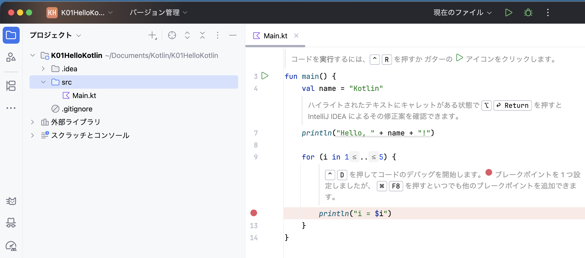
src の中に Main.kt があり、エディタに開いています。 画像を大きく開く④ まず、そのまま実行する
自分でコードを書く前に、ウィザードが用意したこのサンプルを、1文字も変えずに実行します。
- エディタで
Main.ktを開きます。 fun main()の行の左、行番号の右にある緑の三角 ▷（ガターのアイコン）をクリックします。- 出てきたメニューの、いちばん上の 'MainKt' の実行 を選びます。キーボードの ^ ⇧ R でも同じです。
{kind=link}
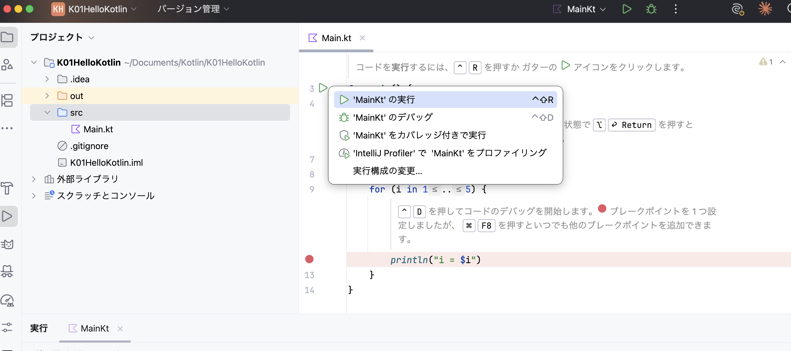
⑤ 出た内容を確かめる
画面の下に 実行 ツールウィンドウが開き、次の内容が出ます。最初の実行は時間がかかることがあります。
Hello, Kotlin!
i = 1
i = 2
i = 3
i = 4
i = 5
プロセスは終了コード 0 で終了しました{kind=link}
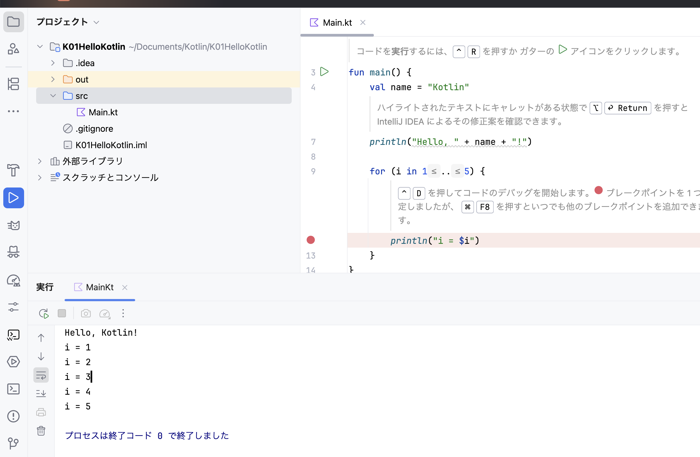
プロセスは終了コード 0 で終了しました です。 画像を大きく開くPOINT
- 最後の
プロセスは終了コード 0 で終了しましたは、プログラムが最後まで動いて、正常に終わったという意味です。出力の一部ではありません。 - この
0は、JavaのSystem.exit(0)、Swiftのexit(0)に書く0と同じものです。0以外の数で終わったときは、途中で異常が起きています。 - 自分でコードを書く前に一度動かしておくと、あとで動かなくなったときに、自分が書いた行だけを疑えます。「そもそも環境が動いていないのでは」を先に消しておく、ということです。
⑥ ex01 パッケージと main.kt を作る
動くことを確かめたら、ここからは自分のファイルを作ります。見本の Main.kt を先に消してから、ex01 パッケージを作ります。
- 左のプロジェクトツリーで
srcの下のMain.ktを右クリックし、削除 を選びます。確認のダイアログが出たら OK を押します。この単元では使いません。
{kind=link}
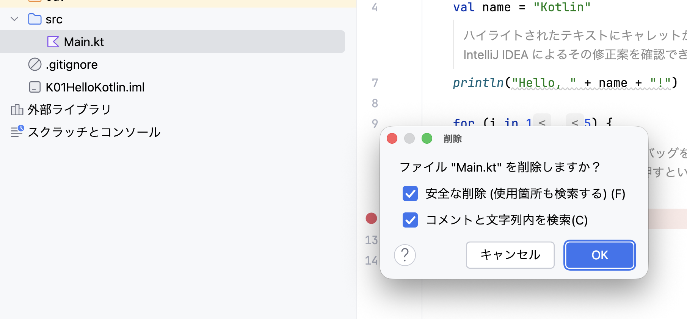
Main.kt を消します。チェックはそのままで OK を押します。 画像を大きく開くsrcを右クリックし、新規 → パッケージ を選びます。
{kind=link}
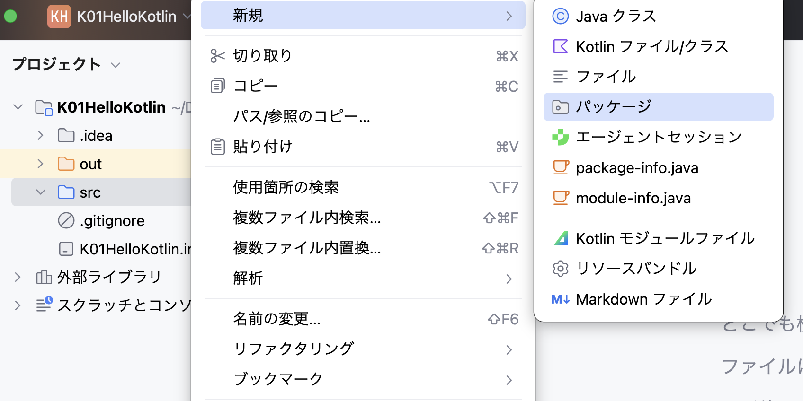
src を右クリックして 新規 → パッケージ。すぐ上の Kotlin ファイル/クラス と間違えないようにします。 画像を大きく開く- 名前に
ex01と入力して Return を押します。srcの下にex01ができます。
{kind=link}
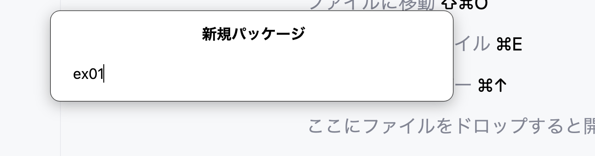
ex01。すべて小文字で、記号は入れません。 画像を大きく開く- できた
ex01を右クリックし、新規 → Kotlin ファイル/クラス を選びます。srcではなくex01を右クリックします。
{kind=link}
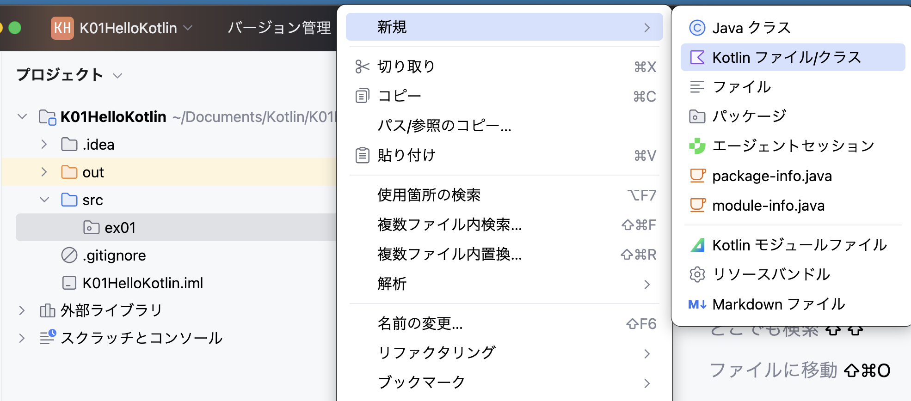
ex01 を右クリックして 新規 → Kotlin ファイル/クラス。 画像を大きく開く- 名前に
mainと入力し、下の一覧から ファイル を選んで Return を押します。いちばん上の「クラス」ではありません。「クラス」を選ぶとclass mainが作られ、このあとの手順と合わなくなります。
{kind=link}
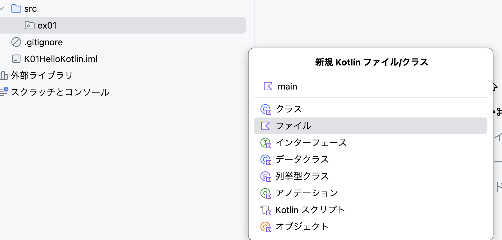
main、種類は ファイル。上から2番目です。 画像を大きく開く- できた
main.ktの1行目にpackage ex01が入っていることを確かめます。
{kind=link}
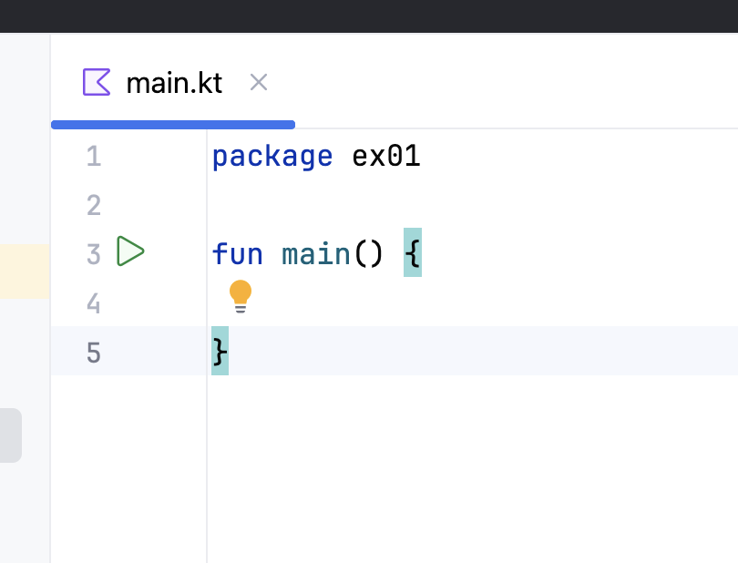
package ex01 と、空の fun main() は IntelliJ IDEA が入れたものです。自分で打つ必要はありません。 画像を大きく開く1行目が package ex01 になっていないとき
ファイルが ex01 の中ではなく src の直下にできています。main.kt を右クリックして削除し、④からやり直します。ex01 を右クリックしたかどうかが分かれ目です。
この単元は全6コマです。回を重ねるごとに、同じ K01HelloKotlin プロジェクトの src の下に、いまと同じ手順で ex02、ex03 …とパッケージを足していきます。プロジェクトを作り直さないので、前の回に書いたコードを、いつでも開いて見返せます。
⑦ ファイル全体を、次の内容にする
package ex01
fun main() {
println("Hello, Kotlin!")
}fun main() の行の左に出る緑の三角 ▷ をクリックし、'MainKt' の実行 を選びます。下の 実行 ツールウィンドウに Hello, Kotlin! と プロセスは終了コード 0 で終了しました が出れば成功です。
i = 1 〜 i = 5 はもう出ません。消した Main.kt ではなく、いま書いた ex01 の main.kt が動いているからです。
この「ガターの ▷ から 'MainKt' の実行 を選ぶ」操作を、この教科書では STEP 03 以降「Run」と書きます。STEP 01 の Kotlin Playground の Run ボタンと同じ意味です。
⑧ ファイル名とクラス名の関係
Kotlin
// src/ex01/main.kt
package ex01
fun main() {
println("Hello, Kotlin!")
}Java
// src/ex01/Main.java
package ex01;
public class Main {
public static void main(String[] args) {
System.out.println("Hello, Java!");
}
}POINT
- Javaの「ファイル名と
publicクラス名を一致させる」という決まりが、Kotlinにはありません。ファイル名はmain.ktのように小文字で構いません。 - 関数をクラスの外（トップレベル）に置けます。入口を入れるためだけのクラスを作らずに済みます。
package宣言があり、フォルダ構成と合わせる点はJavaと同じです。違うのは行末の;が要らないことです。Swiftにはpackage宣言そのものがありません。- 実行の設定名が
MainKtになるのは、Kotlinがmain.ktからMainKtというクラスを作ってバイトコードに落としているからです。クラスを書かなくても、JVMの上ではクラスになっています。
大文字と小文字
ファイル名は main.kt、パッケージ名は ex01 です。Main.kt や Ex01 ではありません。Kotlinは大文字と小文字を区別します。
ここで止まって確認
できたらチェックします。できないときは、この画面を先生に見せましょう。
変数を宣言する（val と var）
このステップのゴール
val と var を使い分け、型注釈を省いて書きます。
変更するファイル：src/ex01/main.kt
Kotlinの変数宣言は、キーワードが2つあります。
| キーワード | 意味 |
|---|---|
val | 再代入禁止。あとから別の値を入れるとコンパイルエラーになります。 |
var | 再代入可能。あとから別の値を入れられます。 |
① ファイル全体を、次の内容に置き換える
package ex01
fun main() {
val number1 = 1
var name = "Yamada"
name = "Tanaka"
println(number1)
println(name)
}② 実行結果
1
Tanaka③ Java / Swift ではどう書くか
Kotlin
val number1 = 1
var name = "Yamada"
name = "Tanaka"Java
final int number1 = 1;
String name = "Yamada";
name = "Tanaka";Swift
let number1 = 1
var name = "Yamada"
name = "Tanaka"POINT
valキーワードで宣言した変数は再代入禁止です。再代入するとコンパイルエラーになります。Javaのfinal、Swiftのletにあたります。varキーワードで宣言した変数は再代入可能です。Swiftのvarと同じです。- Javaは「再代入できる」のが既定で、
finalを足して止めます。KotlinとSwiftは逆で、宣言のキーワードそのもので分けます。迷ったらまずvalで書き、再代入が要るときだけvarにするのがKotlinの書き方です。 - Swiftと同様に型推論が効くため、変数宣言時の型の指定は省略できます。
val number1: Int = 1と書くこともできますが、右辺から決まるときは書きません。 - Swiftと同様に文末のセミコロン（
;）が不要です。
Javaの var と、Kotlinの var は別物
Java 10以降にもローカル変数の var があります。ただしJavaの var は「型を書かない」という意味で、再代入できるかどうかとは関係ありません（final var と書けます）。
Kotlinの var は「再代入できる」という意味で、型を書くかどうかとは関係ありません（var name: String = "Yamada" と書けます）。つづりが同じでも、分けている軸が違います。
押す前に予想する
println(name) では、Yamada と Tanaka のどちらが出るでしょうか。予想してから、Runで確かめましょう。
確かめたあとに答えを見る
Tanaka が出ます。JavaやSwiftと同じで、その行より上で最後に代入された値が入っています。
ここで止まって確認
できたらチェックします。できないときは、この画面を先生に見せましょう。
数の型を確かめる（Int・Double・Float）
このステップのゴール
Int・Double・Float をリテラルの書き方で作り分け、println で出します。
変更するファイル：src/ex01/main.kt
| 型 | リテラルの書き方 | 意味 |
|---|---|---|
Int | 1 | 整数。既定の整数型です。 |
Double | 2.0 | 小数点を書くと、この型になります。既定の浮動小数点型です。 |
Float | 3.0f | うしろに f を付けると、この型になります。 |
① 追加する場所を見つける
val number1 = 1
// ① この位置に、次の2行を追加します。
var name = "Yamada"
name = "Tanaka"
println(number1)
// ② この位置に、次の2行を追加します。
println(name)② 値の行に2行追加する
val number2 = 2.0 // Double
val number3 = 3.0f // Float③ 表示の行に2行追加する
println(number2)
println(number3)貼り付けると、IntelliJ IDEA が行頭の字下げをそろえます。ほかの行と頭がそろっていれば大丈夫です。
④ 実行結果
1
2.0
3.0
Tanaka3.0f と書いたのに、出るのは 3.0 です。f はリテラルの型を決める目印で、値そのものには入っていません。Javaで System.out.println(3.0f) としたときと同じ結果です。
⑤ Java / Swift ではどう書くか（型）
Kotlin
val number1 = 1 // Int
val number2 = 2.0 // Double
val number3 = 3.0f // FloatJava
final int number1 = 1; // プリミティブ型
final double number2 = 2.0; // プリミティブ型
final float number3 = 3.0f; // プリミティブ型
final Integer boxed = number1; // ラッパークラスSwift
let number1 = 1 // Int
let number2 = 2.0 // Double
let number3: Float = 3.0 // FloatPOINT
- Kotlinには、Javaのプリミティブ型とラッパークラスの区別がありません。 書くのは
Int1つだけです。intとIntegerのどちらとしてバイトコードに落とすかは、コンパイラが決めます。 - だから、Javaで書くときに考えていた「ここは
intかIntegerか」「リストに入れるからボクシングされる」といった判断が、宣言のときには要りません。 - 型の名前はSwiftと同じく
Int/Double/Floatで、大文字で始まります。Javaのintのように小文字の型はありません。 - 小数のリテラルが既定で
Doubleになる点は、KotlinもSwiftも同じです。 - Swiftには
3.0fという書き方がありません。SwiftでFloatにしたいときはlet number3: Float = 3.0のように型注釈で指定します。Kotlinはこの点ではJavaと同じく、接尾辞のfが使えます。
⑥ Java / Swift ではどう書くか（出力）
Kotlin
println(number1)
print(number1)Java
System.out.println(number1);
System.out.print(number1);Swift
print(number1)
print(number1, terminator: "")POINT
printlnはKotlin標準ライブラリのトップレベル関数です。System.outのような入れ物も、importも要りません。- 改行するのが
println、改行しないのがprintです。JavaのSystem.out.printlnとSystem.out.printの対応と同じです。 - Swiftの
printは既定で改行するので、名前は同じでも、はたらきはKotlinのprintlnのほうです。改行しないときはterminatorを渡します。ここは読み替えが要ります。
ここで止まって確認
できたらチェックします。できないときは、この画面を先生に見せましょう。
ミニ練習
ここからは自分で書き換えます。1つ変える → 予想する → Runするの順です。答えは、試してから開きましょう。
練習A · 変数を1つ足す（必須・3分）
やること
val の変数を1つと、それを出す println を1行足して、出力を5行にします。値も型も自分で決めます。型注釈は書かずに、変数名にマウスを重ねて、推論された型を確かめましょう。
試したあと：確かめること
4 と書けば Int、4.5 と書けば Double、4.5f と書けば Float です。リテラルの書き方だけで型が決まっていることを、画面で確かめてください。
練習B · 再代入して、コンパイルエラーを起こす（必須・4分）
やること
name = "Tanaka" の次の行に number1 = 5 と書き足します。Runを押す前に、その行に出たエラーメッセージを読んでください。
読むのは次の3つです。どの行か・何をしようとしたと言っているか・どう直せと言っているか。
試したあと：答えと理由
書き足した行が赤くなり、'val' cannot be reassigned と出ます。Runしても実行されません。number1 は val で宣言したので、再代入できないからです。
これは コンパイル時 に止まるエラーです。実行してから気づく種類のものではありません。確かめたら、書き足した行を消して元に戻します。
同じ間違いを、JavaとSwiftでしたとき
Kotlin
val number1 = 1
number1 = 5 // 'val' cannot be reassignedJava
final int number1 = 1;
number1 = 5; // cannot assign a value to final variableSwift
let number1 = 1
number1 = 5 // cannot assign to value: 'number1' is a 'let' constantPOINT
- 3つとも、コンパイル時に止まります。止まる条件も同じで、言い回しが違うだけです。
- Javaのメッセージは
finalを、Swiftのメッセージはletを名指しします。Kotlinは'val'を名指しします。メッセージに出てくるキーワードが、直す場所を指しています。 - 直し方は2つです。宣言を
varに変えるか、再代入をやめるか。ここでは再代入をやめて元に戻します。
最後の3分 · 元に戻す
- 練習Aで足した2行を消します。
- 練習Bで書き足した
number1 = 5の行を消します。 - Runし、STEP 00 のゴールと同じ4行に戻ったことを確かめます。
ここで止まって確認
できたらチェックします。できないときは、この画面を先生に見せましょう。
完成
① 完成チェック
Runし、コンソールの出力を上から順に見ます。
| 行 | 出る内容 | 理由 |
|---|---|---|
| 1行目 | 1 | val number1 = 1（Int）の値を出している。 |
| 2行目 | 2.0 | val number2 = 2.0（Double）の値を出している。 |
| 3行目 | 3.0 | val number3 = 3.0f（Float）の値を出している。f は出ない。 |
| 4行目 | Tanaka | var name に再代入した値を出している。 |
表のとおりになったら、先生に画面を見せ、val の行と var の行を指さして説明します。
入力したコードと照合する
ここまで入力した main.kt の全体です。1行目の package ex01 も忘れずに入れます。
package ex01
fun main() {
val number1 = 1
val number2 = 2.0 // Double
val number3 = 3.0f // Float
var name = "Yamada"
name = "Tanaka"
println(number1)
println(number2)
println(number3)
println(name)
}② 同じ4行を、JavaとSwiftで出すと
Kotlin
package ex01
fun main() {
val number1 = 1
val number2 = 2.0 // Double
val number3 = 3.0f // Float
var name = "Yamada"
name = "Tanaka"
println(number1)
println(number2)
println(number3)
println(name)
}Java
package ex01;
public class Main {
public static void main(String[] args) {
final int number1 = 1;
final double number2 = 2.0;
final float number3 = 3.0f;
String name = "Yamada";
name = "Tanaka";
System.out.println(number1);
System.out.println(number2);
System.out.println(number3);
System.out.println(name);
}
}Swift
let number1 = 1
let number2 = 2.0
let number3: Float = 3.0
var name = "Yamada"
name = "Tanaka"
print(number1)
print(number2)
print(number3)
print(name)POINT
- Kotlinで省いたのは、入口を包むクラス、型注釈、行末の
;、System.outの4つです。処理そのものはJavaと同じです。 - Swiftとの差は、入口の
fun main()とpackage宣言、そしてFloatリテラルの書き方だけです。 - 「短く書ける」というのは、書かなかったぶんをコンパイラが補っているということです。Javaで書いていたことが消えたわけではありません。
③ 保存された場所を確かめる
IntelliJ IDEA は、書いたコードを自動でファイルに保存します。保存の操作は要りません。
- Finderを開き、左側の 書類（
Documents）をクリックします。 - その中の
Kotlinフォルダを開き、K01HelloKotlinフォルダがあることを確かめます。
この Documents/Kotlin/K01HelloKotlin フォルダが、今日作ったプロジェクトです。あとでもう一度開けるように、消したり、別の場所へ移動したり、名前を変えたりせずに、そのまま残します。
ここで止まって確認
できたらチェックします。できないときは、この画面を先生に見せましょう。
1コマ目のまとめ
val と var で宣言する → 型はリテラルから決まる → println で出す。
JavaとSwiftで書いていたことを、Kotlinの書き方に置き換えました。
2コマ目のゴール（Null安全）
ここからが2コマ目です。使うプロジェクトは1コマ目と同じ K01HelloKotlin で、作り直しません。src の下に ex02 パッケージを足して、その中に書きます。1コマ目に書いた ex01 は、そのまま残します。
この回の主題は Null安全 です。Kotlinは、null を入れられる型と、入れられない型を、言語のしくみとして分けます。Swiftのオプショナルに近い考え方で、Javaとはいちばん差が大きいところです。
この回で出てくるKotlinの言葉
| Kotlinの言葉 | Javaでの対応 | Swiftでの対応 |
|---|---|---|
String（? なし） | String（null を入れられる） | String |
String? | 対応物なし | String?（オプショナル） |
?.（安全呼び出し） | if (name != null) で囲む、または Optional | ?.（オプショナルチェイン） |
null | null | nil |
count()（文字数） | length() | count |
同じ「nullかもしれない文字列」を3つの言語で書く
Kotlin
var name2: String? = nullJava
String name2 = null;Swift
var name2: String? = nilPOINT
- KotlinとSwiftは、型そのものに「
nullが入るかどうか」を書きます。StringとString?は別の型です。 - Javaには、この区別がありません。どの参照型にも
nullを入れられるので、「入らない」ことを型で表せません。 - Kotlinの
nullは、Swiftのnilにあたります。書く文字が違うだけで、役目は同じです。
2コマ目のゴール（コンソールに出る3行）
5
null
62行目の null も出力の一部です。エラーではありません。なぜ null と出るのかは、STEP 10 で確かめます。
この90分の進み方
| 時間 | 進めるステップ | やること |
|---|---|---|
| 前半（約35分） | STEP 07〜09 | ex02 を作り、String と String? の違いを、わざと出したコンパイルエラーで確かめる。 |
| 後半（約55分） | STEP 10〜12 | 安全呼び出し ?. を書き、3行の出力を完成させる。 |
ここで止まって確認
できたらチェックします。できないときは、この画面を先生に見せましょう。
ex02 パッケージと main.kt を作る
このステップのゴール
K01HelloKotlin プロジェクトを開き直し、src の下に ex02 パッケージと、その中の main.kt を作ります。
STEP 02 の⑥と同じ操作です。違うのは、パッケージ名が ex01 ではなく ex02 になることだけです。手順は、下にもう一度すべて書きます。
① プロジェクトを開き直す
- IntelliJ IDEA を開きます。
K01HelloKotlinがすでに開いていれば、そのまま使います。 - 開いていないときは、ホーム画面の左側に並ぶ、最近開いたプロジェクトの一覧から
K01HelloKotlinをクリックします。 - 一覧に無いときは、ホーム画面の左上のメニューから 開く… を選び、
書類（Documents）の中のKotlinフォルダにあるK01HelloKotlinフォルダを選んで開きます。 - 左の プロジェクト ツールウィンドウに
srcがあり、その下にex01があることを確かめます。ex01は消しません。
② ex02 パッケージを作る
srcを右クリックし、新規 → パッケージ を選びます。すぐ上の Kotlin ファイル/クラス と間違えないようにします。- 名前に
ex02と入力して Return を押します。srcの下にex02ができます。すべて小文字で、記号は入れません。
③ main.kt を作る
- できた
ex02を右クリックし、新規 → Kotlin ファイル/クラス を選びます。srcでもex01でもなく、ex02を右クリックします。 - 名前に
mainと入力し、下の一覧から ファイル を選んで Return を押します。いちばん上の「クラス」ではありません。「クラス」を選ぶとclass mainが作られ、このあとの手順と合わなくなります。 - できた
main.ktの1行目にpackage ex02が入っていることを確かめます。
1行目が package ex02 になっていないとき
ファイルが ex02 の中ではなく、src の直下か ex01 の中にできています。main.kt を右クリックして削除し、③からやり直します。ex02 を右クリックしたかどうかが分かれ目です。
④ Java / Swift ではどう書くか（パッケージ）
Kotlin
// src/ex02/main.kt
package ex02
fun main() {
}Java
// src/ex02/Main.java
package ex02;
public class Main {
}Swift
// Main.swift
// ファイルの先頭に書く
// package 宣言はないPOINT
- KotlinもJavaも、ファイルの先頭に
packageを書き、フォルダの構成と合わせます。違うのは行末の;が要らないことだけです。 - Swiftには、ファイルの先頭に書く
package宣言がありません。同じターゲットの中のファイルは、宣言なしで互いを見られます。 ex01とex02は別のパッケージなので、どちらにもmain.ktがあり、どちらにもfun main()があっても衝突しません。Javaで別パッケージに同じクラス名を置けるのと同じです。
ここで止まって確認
できたらチェックします。できないときは、この画面を先生に見せましょう。
nullを入れられない型と、入れられる型（String と String?）
このステップのゴール
String と String? を書き分けます。? の付かない型に null を入れると、Runする前に止められることを、自分の画面で確かめます。
変更するファイル：src/ex02/main.kt
| 型 | 入れられる値 |
|---|---|
String | 文字列だけ。null は入れられません。 |
String? | 文字列か、null のどちらか。 |
型の最後に ? を1文字足すかどうかだけで、別の型になります。
① ファイル全体を、次の内容にする
package ex02
fun main() {
val name1: String = "Saito"
println(name1.count())
var name2: String? = null
}ここでは型を省かずに : String と : String? を書きます。1コマ目の val number1 = 1 では型推論に任せましたが、この回は型に ? が付いているかどうかが主題なので、画面に見える形で書きます。
② 実行結果
5Saito は5文字なので 5 が出ます。count() は、文字列の文字数を返すKotlinの関数です。Javaの length()、Swiftの count にあたります。
name2 の行が薄い色になっていても大丈夫
var name2: String? = null は宣言しただけで、まだどこからも使っていません。IntelliJ IDEA が「使っていない」ことを薄い色で知らせることがありますが、STEP 10 で使うので、消さずにそのままにします。
③ Java / Swift ではどう書くか（nullを入れられるか）
Kotlin
val name1: String = "Saito"
// val name1: String = null ← 通らない
var name2: String? = null // ? を付ければ入るJava
String name1 = "Saito";
String name2 = null; // どの参照型にも入る
// 型では止められないSwift
let name1: String = "Saito"
// let name1: String = nil ← 通らない
var name2: String? = nil // ? を付ければ入るPOINT
- Kotlinは、型の最後に
?が付いていなければnullを代入できません。コンパイルエラーになり、Runできません。 - Swiftも同じ分け方です。
nilを入れられるのはString?だけで、Stringには入れられません。KotlinのNull安全は、Swiftのオプショナルとほぼ同じ発想です。 - Javaは、どの参照型にも
nullを入れられます。String name = null;はそのまま通り、name.length()を呼んだ瞬間にNullPointerExceptionになります。 - つまりJavaでは動かすまで分からないことが、KotlinとSwiftではコンパイル時に分かります。 同じ間違いに気づく時刻が、実行時から書いている最中に移ります。
- Javaにも
Optionalや@Nullableはありますが、どちらも型そのものの決まりではありません。Stringの変数にnullが入ることを、言語が止めてくれるわけではありません。
④ わざとコンパイルエラーを出す（必須）
やること
val name1: String = "Saito" の "Saito" を null に書き換えます。Runを押す前に、その行を見てください。
見るのは次の3つです。どの行が赤くなったか・IDEが何を止めていると言っているか・どう直せと言っているか。
試したあとに開く：何が起きたか
書き換えた行に赤い波線が出て、この型には null を代入できない、というおおよそその意味のメッセージが出ます。Runしても実行されません。言い回しは IntelliJ IDEA と Kotlin のバージョンで変わるので、文言を覚える必要はありません。赤い波線が出たら、? の付いていない型に null を入れようとしていると読み替えてください。
直し方は2つです。型を String? に変えるか、null をやめて文字列に戻すか。ここでは "Saito" に戻し、赤い波線が消えることを確かめます。
⑤ 同じ間違いを、JavaとSwiftでしたとき
Kotlin
val name1: String = null
// コンパイルエラー。RunできないJava
String name1 = null;
// ここは通る
int length = name1.length();
// 実行時に NullPointerExceptionSwift
let name1: String = nil
// コンパイルエラー。ビルドできないPOINT
- KotlinとSwiftは、書いている最中に止まります。プログラムは1度も動きません。
- Javaは、動かしてその行に着いたときに落ちます。通らなかった経路の
nullは、そのまま残ります。 - どちらも間違いは見つかりますが、見つかる時刻が違います。 Kotlinが型に
?を持ち込んだのは、この時刻を早めるためです。
ここで止まって確認
できたらチェックします。できないときは、この画面を先生に見せましょう。
安全呼び出し（?.）
このステップのゴール
?. を使って、null かもしれない変数のメソッドを呼びます。3行の出力を完成させます。
変更するファイル：src/ex02/main.kt
① ?. は何をするか
| 書き方 | name2 が null のとき | name2 に文字列が入っているとき |
|---|---|---|
name2?.count() | count() を呼ばずに null を返す | count() を呼んで、その結果を返す |
name2.count() | コンパイルエラー。String? には、そのままメソッドを呼べません | 呼べます。文字列を代入した行より後では、Kotlinが型を String として扱い直すためです（スマートキャスト） |
?. は「null なら呼ばずに null を返す」という意味です。 呼ぶか呼ばないかの分岐が、記号1つに入っています。
② ファイル全体を、次の内容にする
package ex02
fun main() {
val name1: String = "Saito"
println(name1.count())
var name2: String? = null
println(name2?.count())
name2 = "Tanaka"
println(name2?.count())
}③ 実行結果
5
null
6| 行 | 出る内容 | 理由 |
|---|---|---|
| 1行目 | 5 | name1 は String で、Saito の5文字。? が付いていないので ?. も要らない。 |
| 2行目 | null | name2 が null なので、count() は呼ばれず null が返り、println がそれを出している。 |
| 3行目 | 6 | name2 に Tanaka を代入したので、count() が呼ばれて6が返る。 |
④ ?. が返す型は Int ではなく Int?
count() は Int を返します。しかし name2?.count() 全体の型は Int? です。name2 が null のときは count() が呼ばれず null が返るので、「Int か null のどちらか」になるからです。
画面で確かめる
fun main() のいちばん最後の行の下に val length = name2?.count() と1行足し、length にマウスを重ねて、出てくる型を読みます。確かめたら、足した行を消します。
確かめたあとに答えを見る
Int? と出ます。Int ではありません。null が返る可能性が、そのまま型に出ています。 Swiftの name2?.count も同じで、結果は Int? です。
⑤ Java / Swift ではどう書くか
Kotlin
var name2: String? = null
val length: Int? = name2?.count()Java
String name2 = null;
Integer length =
(name2 != null) ? name2.length() : null;Swift
var name2: String? = nil
let length: Int? = name2?.countPOINT
- Kotlinの
?.は、Swiftのオプショナルチェイン?.とほぼ同じです。書く記号も、nullのときに呼ばないところも、返る型がInt?になるところも同じです。違うのは、Kotlinのcount()が関数で、Swiftのcountがプロパティであることくらいです。 - Javaには
?.がありません。if (name2 != null)で囲むか、Optional.ofNullable(name2).map(String::length).orElse(null)のように書きます。 - Javaの書き方は、囲むことを書く人が忘れないという前提の上に立っています。 忘れても書けてしまい、実行して初めて
NullPointerExceptionになります。 - Kotlinでは、
nullが入っているかもしれない位置で?.を忘れると、コンパイルエラーになります。Runできないので、忘れたまま先へ進めません。忘れられないのが、ifで囲む書き方との違いです。 - ただし「常にエラー」ではありません。 文字列を代入した行より後では、Kotlinがその変数を
Stringとして扱い直すので（スマートキャスト）、name2.count()と書いても通ります。この教材の完成コードは3回とも?.でそろえてありますので、3つ目には次の注意が出ます。
3つ目の ?. に、黄色い警告が出ます
完成コードの最後の行 println(name2?.count()) に、IntelliJ IDEA が警告を出します。間違いではありません。 直前の行で文字列を代入しているので、Kotlinはこの位置の name2 を String として扱っています。null でないと分かっている相手に ?. を付けているため、「その ?. は要りません」と教えてくれています。
この教材では、3回とも同じ書き方にそろえたいので、警告が出るまま残します。 消したいときは、最後の行だけ println(name2.count()) にすれば警告は消えます。出力はどちらでも 6 です。
Kotlin
var name2: String? = null
name2 = "Tanaka"
// 代入より後は String として扱われる
println(name2.count()) // 通る（6）
println(name2?.count()) // 通るが「?. は要らない」と警告Swift
var name2: String? = nil
name2 = "Tanaka"
// 代入しても String? のまま。扱い直さない
print(name2.count) // エラー
print(name2?.count) // 警告なし。これが必要ここはSwiftと違うところです。 Swiftは代入しても型が String? のままなので、?. かアンラップがいつでも要ります。Kotlinは、代入した内容から「ここではもう null ではない」と判断して、型を絞り込みます。
ここで止まって確認
できたらチェックします。できないときは、この画面を先生に見せましょう。
ミニ練習
ここからは自分で書き換えます。1つ変える → 予想する → Runするの順です。答えは、試してから開きましょう。
練習A · String? の変数をもう1つ足す（必須・7分）
やること
fun main() のいちばん最後の行（3つめの println）の下に、String? の変数を1つ足します。名前も値も自分で決めます。まず null を入れ、?.count() を付けた println を1行足して、出力を4行にします。Runして結果を見たら、こんどは null のかわりに好きな文字列を入れて、もう一度Runします。
試したあと：確かめること
null を入れたときは null と出ます。文字列を入れたときは、その文字列の文字数が出ます。自分が入れた文字列を数えて、出た数と合っているか確かめましょう。同じ1行が、入っている値によって数を出したり null を出したりします。これが ?. のはたらきです。
練習B · ?. を . にしてみる（必須・5分）
やること
練習Aで足した行の ?. を . に書き換えます。Runを押す前に、その行を見てください。
試したあと：答えと理由
その行に赤い波線が出て、Runできません。String? の変数には、メソッドをそのまま呼べないからです。メッセージの文言はバージョンで変わるので、覚えなくて構いません。読み替えるのは「? の付いた型を、? なしで扱おうとしている」の1つだけです。
確かめたら ?. に戻し、赤い波線が消えることを確かめます。
同じことを、JavaとSwiftでしたとき
Kotlin
val name3: String? = null
val length = name3.count()
// コンパイルエラー。RunできないJava
String name3 = null;
int length = name3.length();
// 通る。実行時に NullPointerExceptionSwift
let name3: String? = nil
let length = name3.count
// コンパイルエラー。ビルドできないPOINT
- KotlinとSwiftは、
?の付いた型にそのままメソッドを呼ぶコードを、コンパイル時に止めます。 - Javaは止めません。
nullかどうかを確かめるのは、書く人の仕事です。 ?.は「安全に書くための心がけ」ではなく、「書かないと通らない」しくみです。 ここがJavaといちばん違うところです。
最後の3分 · 元に戻す
- 練習Aで足した2行を消します。
?.が元どおりになっていることを確かめます。- Runし、STEP 10 と同じ3行に戻ったことを確かめます。
ここで止まって確認
できたらチェックします。できないときは、この画面を先生に見せましょう。
完成
① 完成チェック
Runし、コンソールの出力を上から順に見ます。
| 行 | 出る内容 | 理由 |
|---|---|---|
| 1行目 | 5 | val name1: String には null が入らないので、?. なしで count() を呼べる。 |
| 2行目 | null | var name2: String? が null のとき、?. が count() を呼ばずに null を返している。 |
| 3行目 | 6 | 同じ name2?.count() でも、文字列が入っていれば count() が呼ばれる。 |
表のとおりになったら、先生に画面を見せ、? を書いた場所と ?. を書いた場所を指さして説明します。
入力したコードと照合する
ここまで入力した main.kt の全体です。1行目の package ex02 も忘れずに入れます。
package ex02
fun main() {
val name1: String = "Saito"
println(name1.count())
var name2: String? = null
println(name2?.count())
name2 = "Tanaka"
println(name2?.count())
}② 同じ3行を、JavaとSwiftで出すと
Kotlin
package ex02
fun main() {
val name1: String = "Saito"
println(name1.count())
var name2: String? = null
println(name2?.count())
name2 = "Tanaka"
println(name2?.count())
}Java
package ex02;
public class Main {
public static void main(String[] args) {
final String name1 = "Saito";
int length = name1.length();
System.out.println(length);
String name2 = null;
printLength(name2);
name2 = "Tanaka";
printLength(name2);
}
static void printLength(String s) {
if (s == null) {
System.out.println("null");
} else {
System.out.println(s.length());
}
}
}Swift
let name1: String = "Saito"
print(name1.count)
var name2: String? = nil
// ?. の書き方はKotlinと同じ
let length1: Int? = name2?.count
name2 = "Tanaka"
let length2: Int? = name2?.countPOINT
- Kotlinの
println(name2?.count())の1行が、Javaではifとelseに分かれます。2回出てくるので、ここではprintLengthというメソッドにまとめました。Javaでは「nullのとき何を出すか」も自分で書きます。 Kotlinは?.がnullを返し、printlnがそれをそのまま出します。 - Swiftの書き方はKotlinとほぼ同じです。ただし実行時の形が違います。 Swiftの
String?はオプショナルという入れ物に包まれた別の値なので、そのまま表示すると包まれていることが分かる形で出ます。KotlinのString?は、実行時には文字列そのものかnullかのどちらかで、包む入れ物がありません。だからprintln(name2?.count())は、数かnullをそのまま出します。 - Kotlinの
?と?.は、コンパイラのための印です。実行時の値が増えるわけではありません。ここがSwiftのオプショナルと似て見えて、中身が違うところです。
③ ex01 と ex02 が並んでいることを確かめる
- 左の プロジェクト ツールウィンドウで
srcを開き、ex01とex02が並んでいることを確かめます。 ex01のmain.ktを開きます。1コマ目に書いたコードが、そのまま残っています。fun main()が2つありますが、パッケージが違うので別のプログラムです。動かしたいほうのファイルを開き、そのfun main()の左の ▷ を押します。
プロジェクトは K01HelloKotlin の1つだけを使い続けます。回を重ねるごとに src の下のパッケージが増えていくので、前に書いたコードをいつでも開いて見返せます。
ここで止まって確認
できたらチェックします。できないときは、この画面を先生に見せましょう。
この回のまとめ
? を付けた型だけが null を持てる → 呼ぶときは ?. を付ける → 返ってくるのも ? の付いた型。
Javaでは実行時に NullPointerException で気づいていたことを、Kotlinでは書いている最中に見つけられます。Swiftのオプショナルで知っている考え方が、そのまま使えます。
3コマ目のゴール（関数）
ここからが3コマ目です。使うプロジェクトは1コマ目・2コマ目と同じ K01HelloKotlin で、作り直しません。src の下に ex03 パッケージを足して、その中に書きます。すでにある ex01 と ex02 は、そのまま残します。
この回の主題は 関数の宣言 です。やることはJavaのメソッド、Swiftの関数とまったく同じですが、書く順番と記号が、JavaともSwiftとも違います。 何を書くかではなく、どこに何を書くかを覚える回です。
この回で出てくるKotlinの言葉
| Kotlinの言葉 | Javaでの対応 | Swiftでの対応 |
|---|---|---|
fun | キーワードなし（修飾子と戻り値の型で始める） | func |
引数 a: Int | int a（型が先、名前があと） | a: Int（名前が先、型があと） |
戻り値 : Int | メソッド名の前の int | -> Int |
| 戻り値を書かない | void と書く | -> Void を省く |
return | return | return |
| トップレベル関数 | クラスの static メソッド | グローバル関数 |
同じ関数を3つの言語で書く
2つの Int を受け取って、足した Int を返す関数です。中身は3つとも同じで、違うのは形だけです。
Kotlin
fun sum(a: Int, b: Int): Int {
return a + b
}Java
static int sum(int a, int b) {
return a + b;
}Swift
func sum(a: Int, b: Int) -> Int {
return a + b
}POINT
- Kotlinは
funで始めます。Swiftのfuncにあたります。Javaには、この位置に置くキーワードがありません。 - 引数は、Kotlinが
a: Int、Swiftもa: Int、Javaだけがint aです。KotlinとSwiftは名前が先で、Javaは型が先です。 - 戻り値の型は、Kotlinがかっこのうしろの
: Int、Swiftがかっこのうしろの-> Int、Javaがメソッド名の前のintです。3つとも位置か記号が違います。 - 値を返す
returnは、JavaともSwiftとも同じ書き方です。行末に;が要らない点は、1コマ目・2コマ目と同じです。
並びと位置は STEP 15 で1つずつ確かめます。ここでは「3つとも違う形になる」ことだけ見ておきます。
3コマ目のゴール（コンソールに出る2行）
3
3同じ 3 が2行出ます。1行目と2行目では、3 を出している場所が違います。 どちらがどこで出しているのかは、STEP 16 で確かめます。
この90分の進み方
| 時間 | 進めるステップ | やること |
|---|---|---|
| 前半（約40分） | STEP 13〜15 | ex03 を作り、戻り値のある関数 sum を書いて1行目を出す。 |
| 後半（約50分） | STEP 16〜18 | 戻り値のない関数 sum2 を足し、2行の出力を完成させる。 |
ここで止まって確認
できたらチェックします。できないときは、この画面を先生に見せましょう。
ex03 パッケージと main.kt を作る
このステップのゴール
K01HelloKotlin プロジェクトを開き直し、src の下に ex03 パッケージと、その中の main.kt を作ります。
STEP 08 と同じ操作です。違うのは、パッケージ名が ex02 ではなく ex03 になることだけです。手順は、下にもう一度すべて書きます。
① プロジェクトを開き直す
- IntelliJ IDEA を開きます。
K01HelloKotlinがすでに開いていれば、そのまま使います。 - 開いていないときは、ホーム画面の左側に並ぶ、最近開いたプロジェクトの一覧から
K01HelloKotlinをクリックします。 - 一覧に無いときは、ホーム画面の左上のメニューから 開く… を選び、
書類（Documents）の中のKotlinフォルダにあるK01HelloKotlinフォルダを選んで開きます。 - 左の プロジェクト ツールウィンドウに
srcがあり、その下にex01とex02があることを確かめます。どちらも消しません。
② ex03 パッケージを作る
srcを右クリックし、新規 → パッケージ を選びます。すぐ上の Kotlin ファイル/クラス と間違えないようにします。- 名前に
ex03と入力して Return を押します。srcの下にex03ができます。すべて小文字で、記号は入れません。
③ main.kt を作る
- できた
ex03を右クリックし、新規 → Kotlin ファイル/クラス を選びます。srcでもex01でもex02でもなく、ex03を右クリックします。 - 名前に
mainと入力し、下の一覧から ファイル を選んで Return を押します。いちばん上の「クラス」ではありません。「クラス」を選ぶとclass mainが作られ、このあとの手順と合わなくなります。 - できた
main.ktの1行目にpackage ex03が入っていることを確かめます。
1行目が package ex03 になっていないとき
ファイルが ex03 の中ではなく、src の直下か、ex01・ex02 の中にできています。main.kt を右クリックして削除し、③からやり直します。ex03 を右クリックしたかどうかが分かれ目です。
④ Java / Swift ではどう書くか（パッケージと、関数を置く場所）
Kotlin
// src/ex03/main.kt
package ex03
fun main() {
}
// 関数はファイルの直下に置ける
fun sum(a: Int, b: Int): Int {
return a + b
}Java
// src/ex03/Main.java
package ex03;
public class Main {
public static void main(String[] args) {
}
// メソッドはクラスの中にしか置けない
static int sum(int a, int b) {
return a + b;
}
}Swift
// Main.swift
// package 宣言はない
// 関数はファイルの直下に置ける
func sum(a: Int, b: Int) -> Int {
return a + b
}POINT
- KotlinもJavaも、ファイルの先頭に
packageを書き、フォルダの構成と合わせます。違うのは行末の;が要らないことだけです。 - Swiftには、ファイルの先頭に書く
package宣言がありません。同じターゲットの中のファイルは、宣言なしで互いを見られます。 - Kotlinは、関数をファイルの直下に書けます。 これをトップレベル関数と呼びます。1コマ目から書いている
fun main()が、その1つめです。Swiftのグローバル関数と同じ置き方です。 - Javaは、メソッドを必ずクラスの中に置きます。この回で書く
sumも、Javaならクラスの中のstaticメソッドにあたります。 ex01・ex02・ex03は別のパッケージなので、どれにもmain.ktがあり、どれにもfun main()があっても衝突しません。Javaで別パッケージに同じクラス名を置けるのと同じです。
ここで止まって確認
できたらチェックします。できないときは、この画面を先生に見せましょう。
戻り値のある関数（fun sum）
このステップのゴール
fun で関数を宣言し、引数を 名前: 型、戻り値を末尾の : 型 で書きます。return で返した値を main で受け取り、1行目の 3 を出します。
変更するファイル：src/ex03/main.kt
① ファイル全体を、次の内容にする
package ex03
fun main() {
val ret = sum(1, 2)
println(ret)
}
fun sum(a: Int, b: Int): Int {
return a + b
}fun main() と fun sum(…) は、どちらもファイルの直下に並べます。入れ子にしません。 書く順番は自由で、sum を main より下に書いても、main から呼べます。
② 実行結果
3sum(1, 2) が 3 を返し、その値が ret に入り、println(ret) が出しています。sum の中には println がありません。 出しているのは main のほうです。
③ Java / Swift ではどう書くか（関数の宣言）
Kotlin
fun sum(a: Int, b: Int): Int {
return a + b
}
val ret = sum(1, 2)Java
static int sum(int a, int b) {
return a + b;
}
final int ret = sum(1, 2);Swift
func sum(a: Int, b: Int) -> Int {
return a + b
}POINT
- やっていることは3つとも同じです。違うのは、同じ部品をどの順番に並べるかだけです。
- Kotlinの
funは、Swiftのfuncにあたります。Javaには対応する語がなく、修飾子（static）と戻り値の型から始まります。 - Kotlinの呼び出しは
sum(1, 2)で、Javaと同じ形です。受け取った値をvalに入れるところも、Javaのfinal付きの変数と同じです。
④ 引数は「名前: 型」 — Swiftと同じ並び、Javaと逆
| 言語 | 引数の書き方 | 先に書くもの |
|---|---|---|
| Kotlin | a: Int | 名前 |
| Java | int a | 型 |
| Swift | a: Int | 名前 |
Javaの並びで fun sum(Int a, Int b) と書くと、通りません。 Runする前に赤い波線が出て、引数に型が書かれていない、というおおよそその意味のメッセージが出ます。言い回しは IntelliJ IDEA と Kotlin のバージョンで変わるので、文言は覚えなくて構いません。読み替えるのは「名前と型の順番が逆になっている」の1つだけです。
なぜKotlinは名前を先に書くのか
1コマ目で書いた変数の宣言を思い出してください。Kotlinは val number1: Int = 1 と書き、名前が先、型があとでした。関数の引数も、同じ並びにそろえてあります。
この並びだと、型を省いても形が崩れません。 val number1 = 1 のように、うしろの : Int を取るだけで済みます。Javaの int number1 = 1; は先頭が型なので、そこを省くと何も残りません。型を省ける言語は、型をうしろに置くほうが都合がよいのです。 Swiftが同じ並びなのも、同じ理由です。
ただし、関数の引数の型だけは省けません。 呼ぶ側が何を渡してよいか決まらなくなるからです。ここはSwiftも同じです。
⑤ 戻り値は末尾に「: 型」 — 3言語で位置か記号が違う
| 言語 | 宣言の1行目 | 戻り値の型を書く場所 |
|---|---|---|
| Kotlin | fun sum(a: Int, b: Int): Int { | かっこのうしろに : Int |
| Java | static int sum(int a, int b) { | メソッド名の前に int |
| Swift | func sum(a: Int, b: Int) -> Int { | かっこのうしろに -> Int |
POINT
- KotlinとSwiftは場所が同じで、記号だけが違います。 Kotlinは
:、Swiftは->です。Swiftの書き方でfun sum(a: Int, b: Int) -> Intと書くと、Kotlinでは通りません。 - Kotlinが
:を使うのは、変数の型注釈と同じ記号にそろえるためです。val ret: Intとfun sum(…): Intで、「:のうしろが型」という読み方が1つで済みます。 - Javaだけが、名前より前に型を書きます。引数の
int aと同じで、Javaは型を先に書く言語だからです。 - Kotlinでは、
: Intと書いたらreturnで必ず値を返します。返さずに}まで進むと、returnが足りない、というおおよそその意味のエラーになり、Runできません。
ここで止まって確認
できたらチェックします。できないときは、この画面を先生に見せましょう。
戻り値のない関数（fun sum2）
このステップのゴール
戻り値のない関数を書きます。Kotlinでは、末尾に何も書きません。2行目の 3 を出して、出力を完成させます。
変更するファイル：src/ex03/main.kt
① ファイル全体を、次の内容にする
package ex03
fun main() {
val ret = sum(1, 2)
println(ret)
sum2(1, 2)
}
fun sum(a: Int, b: Int): Int {
return a + b
}
fun sum2(a: Int, b: Int) {
println(a + b)
}足したのは、main の中の sum2(1, 2) の1行と、いちばん下の sum2 の宣言です。sum2 のかっこのうしろには、何も書きません。 : Int のような型も、記号も付けません。
② 実行結果
3
3| 行 | 出る内容 | 出している場所 |
|---|---|---|
| 1行目 | 3 | sum が返した値を、main の println(ret) が出している。 |
| 2行目 | 3 | sum2 の中の println(a + b) が出している。main は受け取っていない。 |
同じ 3 でも、出している場所が違います。 sum は計算結果を返すだけで出力せず、sum2 は計算結果を返さずに、関数の中で出力します。
③ Java / Swift ではどう書くか（戻り値がないとき）
Kotlin
// かっこのうしろに何も書かない
fun sum2(a: Int, b: Int) {
println(a + b)
}Java
// void は省けない
static void sum2(int a, int b) {
System.out.println(a + b);
}Swift
// -> Void を省いた形
func sum2(a: Int, b: Int) {
print(a + b)
}POINT
- Kotlinは、戻り値がないときに何も書きません。 Swiftも
-> Voidを省けるので、書き上がりは同じ形になります。 - Javaだけは
voidを必ず書きます。メソッド名の前に必ず何かを置く文法だからです。前を空にはできないので、「無い」ことを表す語が要ります。 - KotlinとSwiftは、戻り値の型をかっこのうしろに置きます。うしろは、書かなければそこで終わるだけです。だから「無い」ことを表す語を用意しなくて済みます。書く位置の違いが、そのまま省けるかどうかの違いになっています。
④ 何も書かないとき、Kotlinは何を返しているのか
Kotlinには、戻り値がないことを表す Unit という型があります。sum2 のように何も書かなかった関数は、Unit を返す関数として扱われます。fun sum2(a: Int, b: Int): Unit と書いても同じ意味ですが、ふつうは書きません。省くのが既定の書き方です。
画面で確かめる
main の中の sum2(1, 2) を val ret2 = sum2(1, 2) に書き換え、その下に println(ret2) を1行足してRunします。確かめたら、足した行を消し、sum2(1, 2) の形に戻します。
確かめたあとに答えを見る
出力は3行になり、3行目に kotlin.Unit と出ます。「何も返さない」ように見える関数も、値を1つ返しています。ふだんはその値を受け取らないので、目に見えないだけです。
Javaの void は型ではないので、int x = sum2(1, 2); のように結果を変数へ入れることはできません。Swiftの Void は空のタプル () の別名で、Kotlinの Unit と同じ発想です。Javaだけが「値が無い」を型の外側で表しています。
POINT
- 書くときに覚えるのは1つだけです。戻り値がなければ、かっこのうしろには何も書かない。
: Unitと書いても動きますが、この教材では書きません。Kotlinのふつうの書き方は、省いた形です。
ここで止まって確認
できたらチェックします。できないときは、この画面を先生に見せましょう。
ミニ練習
ここからは自分で書き換えます。1つ変える → 予想する → Runするの順です。答えは、試してから開きましょう。エラーのメッセージは、文言ではなく意味だけを読みます。言い回しは IntelliJ IDEA と Kotlin のバージョンで変わります。
練習A · 引数を3つに増やす（必須・6分）
やること
sum の引数を3つに増やします。fun sum(a: Int, b: Int, c: Int): Int にし、中身も return a + b + c に書き換えます。main の sum(1, 2) はそのままにして、Runを押す前にその行を見てください。
試したあと：答えと理由
sum(1, 2) の行に赤い波線が出て、Runできません。3つ必要な引数に2つしか渡していないので、足りない引数がある、というおおよそその意味のメッセージが出ます。
呼び出しを sum(1, 2, 3) に直すとRunでき、1行目が 6 になります。確かめたら、宣言も呼び出しも元の2つに戻します。
Javaでも同じ間違いはコンパイルエラーになります。引数の数が合っているかは、KotlinもJavaもSwiftも、動かす前に確かめてくれます。
練習B · 戻り値の型を変える（必須・4分）
やること
sum の戻り値の型を : Int から : String に書き換えます。中身の return a + b はそのままにして、Runを押す前にその行を見てください。
試したあと：答えと理由
return a + b の行に赤い波線が出て、Runできません。a + b は Int なのに、String を返すと宣言しているからです。宣言した型と、返している型が合っていない、というおおよそその意味のメッセージが出ます。
末尾に書いた : 型 は、飾りではなく約束です。 Kotlinは、その約束が守られているかを、書いている最中に確かめます。Javaの static String sum(...)、Swiftの -> String でも、同じように止まります。確かめたら : Int に戻します。
練習C · return を消す（必須・2分）
やること
sum の中の return だけを消して、a + b の1行にします。Runを押す前に、関数の閉じかっこ } のあたりを見てください。
試したあと：答えと理由
赤い波線が出て、Runできません。: Int と宣言したのに値を返していないので、return が足りない、というおおよそその意味のメッセージが出ます。
直し方は2つです。return を書き戻すか、: Int のほうを消して sum2 と同じ「戻り値のない関数」にするかです。ここでは return を書き戻します。
同じ3つの間違いを、JavaとSwiftでしたとき
Kotlin
fun sum(a: Int, b: Int): Int {
a + b
}
// コンパイルエラー。RunできないJava
static int sum(int a, int b) {
a + b;
}
// コンパイルエラー。実行できないSwift
func sum(a: Int, b: Int) -> Int {
a + b
}
// Swiftは1行だけなら return を省けるPOINT
- 引数の数・戻り値の型・
returnの有無は、3つの言語すべてが動かす前に確かめます。 ここはKotlinで新しく覚えることではありません。 - ただし
returnの省略だけは違います。Swiftは、本体が1つの式だけならreturnを省けます。 Kotlinは、かっこ{ }で本体を書いた関数では省けません。: Intと宣言したら、returnで返します。 - 2コマ目と同じで、覚えるのはメッセージの文言ではなく、どの行が赤くなったかと、その意味です。
最後の3分 · 元に戻す
- 練習A・B・Cで書き換えたところを、すべて元に戻します。
fun sum(a: Int, b: Int): Intとreturn a + b、sum(1, 2)の3か所を確かめます。- Runし、STEP 16 と同じ2行に戻ったことを確かめます。
ここで止まって確認
できたらチェックします。できないときは、この画面を先生に見せましょう。
完成
① 完成チェック
Runし、コンソールの出力を上から順に見ます。
| 行 | 出る内容 | 理由 |
|---|---|---|
| 1行目 | 3 | sum(1, 2) が返した値が ret に入り、main の println(ret) が出している。 |
| 2行目 | 3 | sum2(1, 2) は計算結果を返さず、sum2 の中の println(a + b) が出している。 |
表のとおりになったら、先生に画面を見せ、: Int と書いた場所と、何も書かなかった場所を指さして説明します。
入力したコードと照合する
ここまで入力した main.kt の全体です。1行目の package ex03 も忘れずに入れます。
package ex03
fun main() {
val ret = sum(1, 2)
println(ret)
sum2(1, 2)
}
fun sum(a: Int, b: Int): Int {
return a + b
}
fun sum2(a: Int, b: Int) {
println(a + b)
}② Javaの完成コードと、Swiftの関数宣言を比べる
Kotlin
package ex03
fun main() {
val ret = sum(1, 2)
println(ret)
sum2(1, 2)
}
fun sum(a: Int, b: Int): Int {
return a + b
}
fun sum2(a: Int, b: Int) {
println(a + b)
}Java
package ex03;
public class Main {
public static void main(String[] args) {
final int ret = sum(1, 2);
System.out.println(ret);
sum2(1, 2);
}
static int sum(int a, int b) {
return a + b;
}
static void sum2(int a, int b) {
System.out.println(a + b);
}
}Swift
// 呼び出しの引数ラベルはこの回では扱わないため、宣言だけを並べる
func sum(a: Int, b: Int) -> Int {
return a + b
}
func sum2(a: Int, b: Int) {
print(a + b)
}POINT
- Javaで増えたのは、入口を包むクラスと、
voidと、行末の;の3つです。処理そのものは同じです。 - Kotlinは
sumもsum2もファイルの直下に置けます。Javaは、どちらもクラスの中のstaticメソッドにします。1コマ目からfun main()をクラスなしで書けていたのと、同じしくみです。 - Swiftの2つの宣言は、Kotlinと形がよく似ています。宣言の先頭行で違うのは
funとfunc、そして戻り値の: Intと-> Intの2か所です。本体の出力は、1コマ目と同じくprintlnとprintの違いがあります。 - 戻り値のない
sum2は、Kotlinでも Swift でもかっこのうしろが空です。Javaだけがvoidを書きます。
③ ex01・ex02・ex03 が並んでいることを確かめる
- 左の プロジェクト ツールウィンドウで
srcを開き、ex01・ex02・ex03が並んでいることを確かめます。 ex01とex02のmain.ktを開きます。前の回に書いたコードが、そのまま残っています。fun main()が3つありますが、パッケージが違うので別のプログラムです。動かしたいほうのファイルを開き、そのfun main()の左の ▷ を押します。
プロジェクトは K01HelloKotlin の1つだけを使い続けます。回を重ねるごとに src の下のパッケージが増えていくので、前に書いたコードをいつでも開いて見返せます。
ここで止まって確認
できたらチェックします。できないときは、この画面を先生に見せましょう。
この回のまとめ
fun で始める → 引数は 名前: 型 → 戻り値はかっこのうしろに : 型 → 無いときは何も書かない。
引数の並びはSwiftと同じでJavaと逆、戻り値の型は3つの言語で書く位置か記号が違います。書く順番や記号が違うだけで、やっていることはJavaのメソッド、Swiftの関数とまったく同じです。
完成プロジェクトを開いて比べる
授業は、自分で新規作成したプロジェクトで進めます。完成版は、動作確認とコード比較のための見本です。見本は、教科書といっしょに配られた教材のフォルダに、そのまま開ける形で入っています。ダウンロードも展開も要りません。
① 見本の場所を確かめる
- Finderを開き、左側の 書類（
Documents）をクリックします。教材のフォルダをダブルクリックで開きます。名前はkotlin-student-materials-のうしろに日付が付いた形で、日付は配られた回によって変わります。いま読んでいるこの教科書が入っているフォルダです。 - その中の
samplesフォルダを開きます。K01HelloKotlinフォルダが見本です。場所を確かめるだけで、移動はしません。
| 使うもの | フォルダの場所（ユーザ名と教材のフォルダは、自分のものに読み替える） |
|---|---|
| 授業で作るプロジェクト | /Users/ユーザ名/Documents/Kotlin/K01HelloKotlin |
| 完成版の見本 | /Users/ユーザ名/Documents/教材のフォルダ/samples/K01HelloKotlin |
② IntelliJ IDEA で開く
- フォルダを選ぶ画面を出します。授業のプロジェクトを開いているときは、いちばん上のメニューバーから ファイル → 開く… を選びます。プロジェクトを1つも開いていないときは、ホーム画面の左上のメニューから 開く… を選びます。
- ①で確かめた
samplesの中のK01HelloKotlinフォルダを選んで開きます。 - 開き方を聞かれたら 新しいウィンドウ を選び、授業のプロジェクトとは別のウィンドウで開きます。
- 左の一覧で
src → ex01 → main.ktの順に開きます。 - 動きを見たいときは、
fun main()の左の ▷ を押します。
③ 今のステップの部分だけを比べる
たとえば STEP 04 で困ったら、見本の val number2 と val number3 の2行を見ます。自分のコードと、. の位置や f の有無を1文字ずつ比べましょう。
見終わったら、授業で作っている Documents/Kotlin/K01HelloKotlin のウィンドウに戻ります。直す場所を1つ確認し、Runして結果を確かめます。分からないときは、先生に2つのコードを見せましょう。
教材のフォルダが手元にないときは、同じ見本をZIPで受け取れます（K01HelloKotlin.zip）。展開してできた K01HelloKotlin フォルダを、②と同じように開きます。
止まった場所から、一緒に直す
赤くなっている最初の行を見ます。2分考えても分からなければ、先生に「ステップ番号・ファイル名・画面」を見せましょう。
| 困ったこと | 最初に確認すること |
|---|---|
| Playgroundで何も出ない | fun main() があるか確認する。println の1行だけでは実行されません。 |
| 新規プロジェクトの画面に Kotlin がない | 左の一覧の、見出し 新規プロジェクト の下を見る。下の ジェネレーター の中の項目ではありません。 |
| ビルドシステムに IntelliJ がない | 左の一覧で Kotlin を選んでいるか確認する。直らなければ画面を先生に見せる。 |
| JDK の欄が空 | 欄を開いて、出てきたものを選ぶ。何も出てこないときは、先生に画面を見せる。 |
| 緑の三角（▷）が出ない | fun main() のつづりを1文字ずつ確認する。main は小文字で、うしろの () も必要。ファイルが src の中にあるかも確認する。 |
package ex01 の行が赤い | ファイルの場所が src/ex01/ か確認する。フォルダ名とパッケージ名を合わせる点はJavaと同じです。 |
Unresolved reference と出る | 名前のつづりを確認する。println・number1・name の大文字と小文字も区別する。 |
'val' cannot be reassigned と出る | val で宣言した変数に再代入していないか確認する。STEP 05 の練習B以外では書きません。 |
| 実行しても何も出ない | 画面の下の 実行 ツールウィンドウが開いているか確認する。閉じていたら 表示 → ツールウィンドウ → 実行 で開く。 |
プロセスは終了コード 1 で終了しました と出る | 0 以外の数で終わったときは、途中で異常が起きています。その上に出ている赤い文字を、上から読む。 |
| 出るけれど、内容が違う | println のかっこの中を確認する。変数名を " " で囲むと、その名前の文字がそのまま出ます。 |
String の変数に null を入れた行が赤い | ? の付かない型には null を入れられません。null を入れたいなら型を String? にし、入れないなら値を文字列に戻す（STEP 09）。 |
String? の変数を使った行が赤い | ?. になっているか確認する。name2.count() ではなく name2?.count() です（STEP 10）。 |
fun を書いた行が赤い | 引数が 名前: 型 の順になっているか確認する。Javaの int a の並びでは通りません（STEP 15）。 |
return について指摘が出る | かっこのうしろに : Int と書いたなら、return で値を返します。返さないなら : Int のほうを消します（STEP 15・STEP 17）。 |
sum(1, 2) の行が赤い | 渡している引数の数と型が、宣言した fun sum(a: Int, b: Int) と合っているか確認する（STEP 17）。 |
| 赤い波線が消えない | 全角のスペースや、全角の引用符（”）が混ざっていないか確認する。英数字の入力に切り替えて、その行を書き直す。 |
| プロジェクトが見つからない | Finderで Documents/Kotlin/K01HelloKotlin をたどる。見つからないときは、作ったときの 場所 の入力を先生に見せる。 |
一度にいくつも直すと、何が変わったか分かりにくくなります。1か所直して、もう一度Runしましょう。
もっと知りたいとき
授業はこの教科書だけで進められます。次の公式資料は、あとから調べたい人向けです（英語で書かれています）。